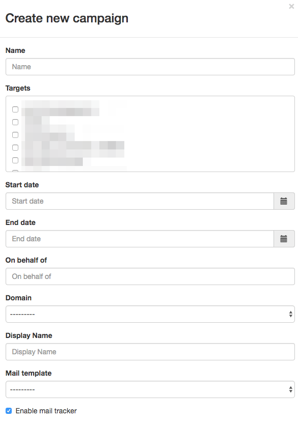
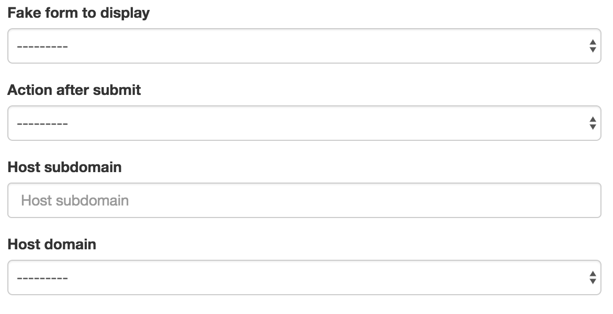
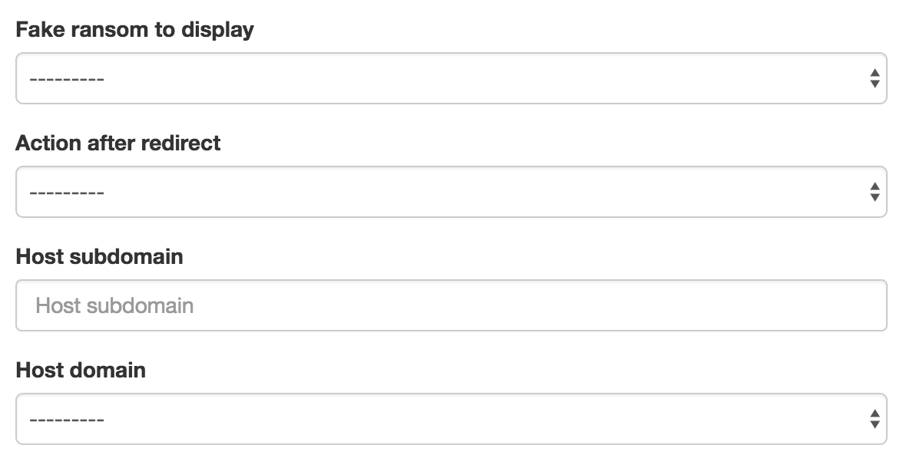
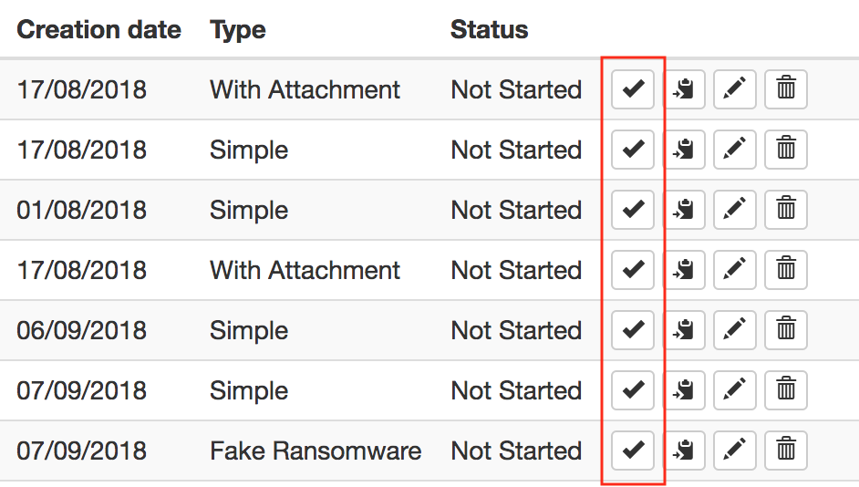
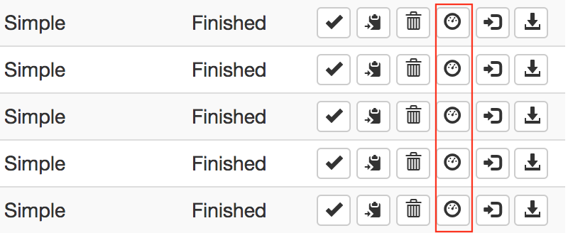
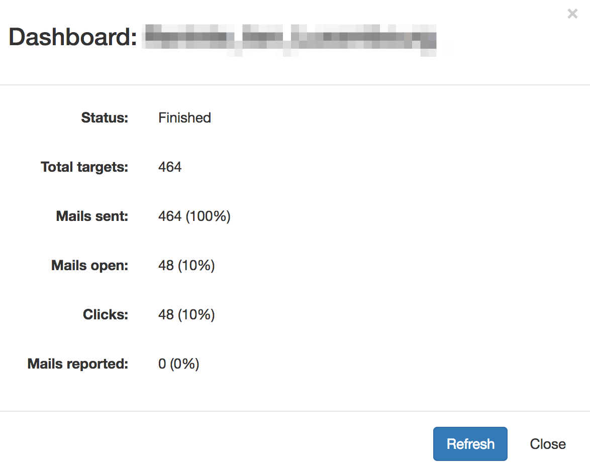
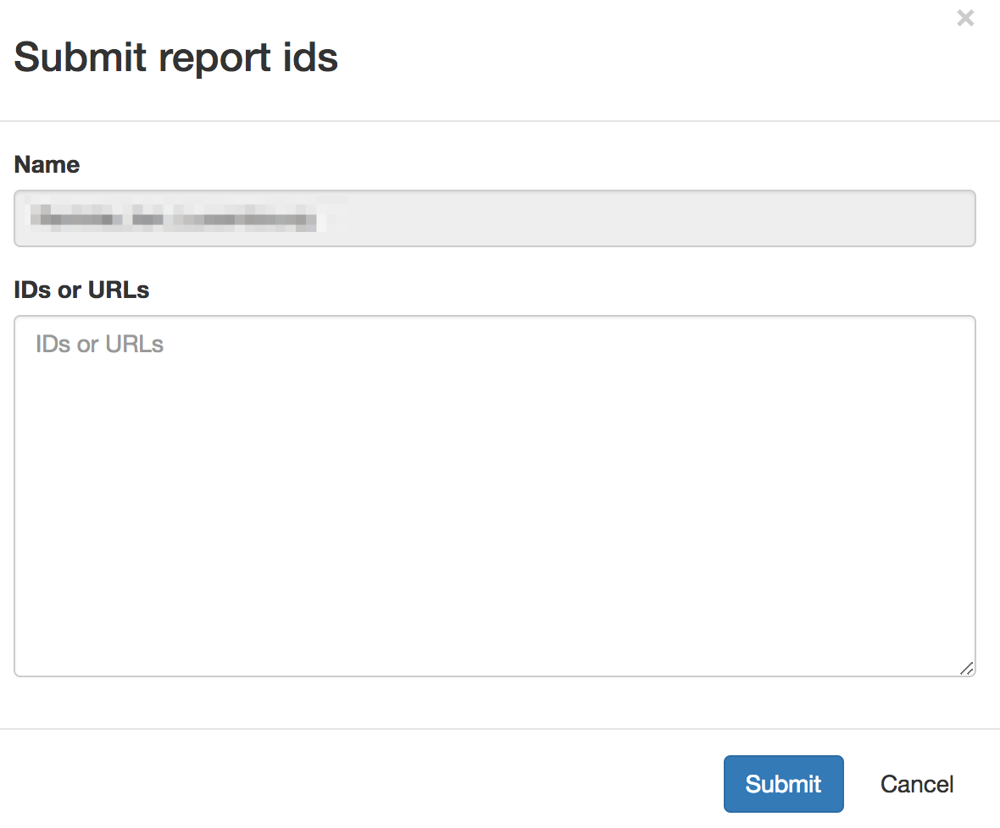

Campaigns
A campaign is the organization of what you will send, to whom and when.
You can create three kind of campaign which will be discussed below. But here are the mandatory fields used in both campaign types:

- Name: name of the campaign, it's up to you, but you can't have two campaigns with the same name
- Targets: chose one or more targets list to launch awareness on
- Start date: the exact date (year, month, day, hour and minute) the campaign will be automatically started.
- End date: the exact date when the campaign will be stopped (no more click will be taken in account after this date and the results will be downloadable).
- On behalf of: the left part of the mail address (without domain) that will send the mails, example: firstname.lastname
- From domain: the domain used to send the mail (selected from a drop-down list)
- Display name: the full name that will be displayed next to the mail address, ex: Display Name <not.displayname@domain.com>
- Mail template: the mail that will be sent to the targets (the drop-down list is filtered according to the template type)
- Enable mail tracker: this checkbox allows you to add a blank image or not to track the mail opening
Simple campaign
A "simple campaign" allow you to send mails with links and to execute an action when the targets click on them. The dedicated fields for this kind of campaign are the followings:

- Action after click: define what will be displayed to the user after clicking on the link. It can be a redirection or an awareness webpage.
- Host domain: defines the domain that will host the redirection or the awareness webpage. The link in the mail will be updated automatically.
Campaign with attachment
With this kind of campaign you can define the mail template you will use and the attachment to add into it.

You can choose the dedicated template using the "Attachment template" field, and you can add or not a tracker in it to detect the openings.
Fake form campaign
The fake forms campaigns works like the simples campaigns except that you can display a previously built fake form.

You can also define an action if the target submits the form. This can be a redirection or an awareness web page.
The fake form, and the action after submit will be hosted using the domain defined in the "Host domain" field
Fake ransom campaign

Test feature
Once your campaign is created, it can be tested using the test functionality.
By clicking on the following button, a popup will be displayed to specify a mail address to receive the mail.


This will allow you to test the whole campaign without polluting the statistics before the beginning.
Dashboard
Once your campaign is started, you can display a dashboard to get campaign progress:

By clicking on the following button, a popup will be display useful information about your campaign:

IDs submission
This functionality allows you to submit ID from targets who signaled the mail to security teams.

Ids can be found:
- In the links generated in the received mail
- In the mail headers
- In the trackers urls

You can paste full links, ids will be extracted automatically.
Downloading results
Anonymous results can be downloaded using the dedicated button. A XLSX file will be dropped automatically (can take some time for a big campaign).

In the results the mail address is deleted and replaced by the targets IDs.
This behavior has been asked by French trade unions, to prevent identifying people.
But you can bypass this by adding a tag with the mail or name. We do not recommend this as we're not here to reprimand users!